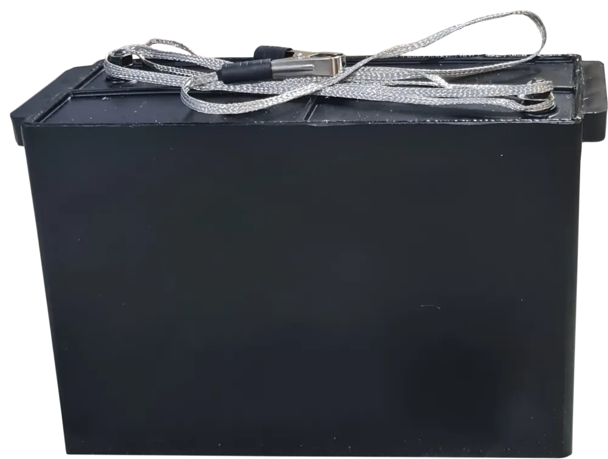

Laboratory Accessories
IK 100-0.4 High-Voltage Pulse Capacitor
High-voltage pulse capacitor for impulse current generators.
Essential for generating high-energy pulses for testing transformers, cables, and external insulation of power lines. Features a durable polypropylene housing and an oil-impregnated paper/film dielectric for reliable performance and high energy density.
About the product
The IK 100-0.4 is a high-voltage pulse capacitor designed for use in impulse voltage and current generators. It is essential for generating high-energy pulses for testing transformers, cables, and external insulation of power lines.
Constructed with a durable polypropylene housing and an oil-impregnated paper/film dielectric, this capacitor ensures reliable performance and high energy density. Its dual handles provide easy portability, making it a practical choice for laboratory and field applications.
IK 100-0.4: Product Overview
A general overview of the instrument's key features and capabilities.
Product documents
Related products


Technical specifications
Note: Specifications are subject to change without notice. For custom ranges and configurations, please contact our sales team.
FAQ
Interpreting test results
For detailed guidance on pulse generator testing and capacitor specifications, refer to your equipment's user manual.
Troubleshooting & Software updates
- No discharge: Ensure proper grounding and discharge procedures are followed before handling.
- Physical damage: Check the housing for cracks or leaks. Do not operate if damaged.
- Incorrect capacitance: Verify connections and test with a calibrated LCR meter.
Application and academic support
For detailed application notes, contact our support team.
Contact Support